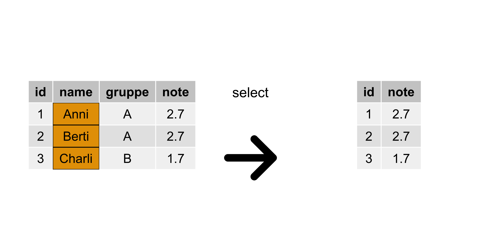
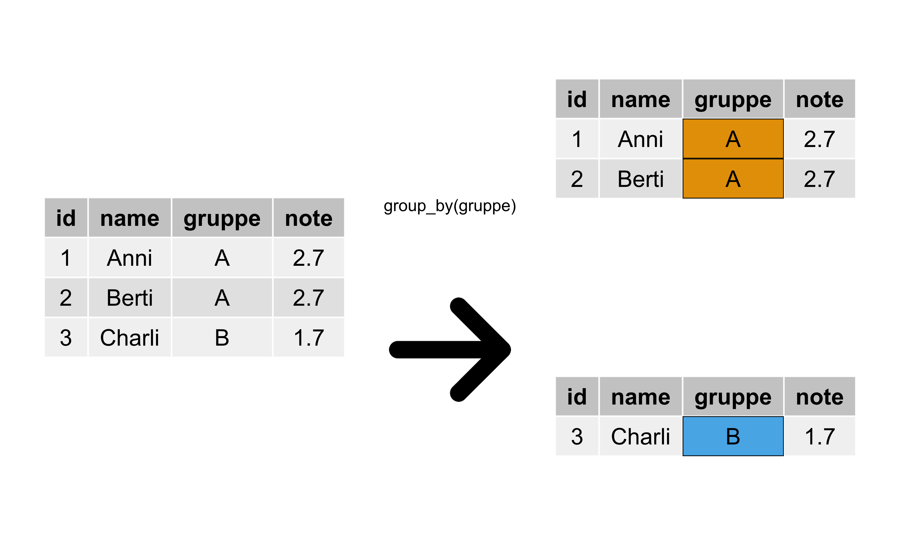

library(tidyverse)
library(easystats)4 Daten umformen
4.1 Lernsteuerung
4.1.1 Standort im Lernpfad
Abb. Abbildung 1.2 zeigt den Standort dieses Kapitels im Lernpfad und gibt damit einen Überblick über das Thema dieses Kapitels im Kontext aller Kapitel.
4.1.2 Lernziele
- Sie können folgende Verben des Datenjudo anwenden:
arrange,filter,select,summarise,group_by,mutate. - Sie können R-Befehle mit der “Pfeife” verketten.
4.1.3 Benötigte R-Pakete
4.1.4 Benötigte Daten
mariokart_path <- "https://vincentarelbundock.github.io/Rdatasets/csv/openintro/mariokart.csv"
mariokart <- read.csv(mariokart_path)Übungsaufgabe 4.1 Importieren Sie den Datensatz mariokart. Probieren Sie alle vorgestellten Verben des Datenjudos aus, zunächst in dem Sie einfach den R-Code kopieren und selber ausführen.\(\square\)
4.1.5 R-Code zum Copy-Pasten
Sie finden den R-Code für jedes Kapitel hier. \(\square\)
4.1.6 Frag den Bot
üßë‚Äçüéì Erkl√§re einem F√ºnfj√§hrigen, warum Statistik n√ºtzlich ist.
ü§ñ Okay, h√∂r zu. Stell dir vor, du hast viele Spielzeugautos und du willst herausfinden, welches Auto am meisten bespielt wird. Du kannst jeden Tag z√§hlen, wie oft du jedes Auto benutzt hast. Aber das w√§re sehr m√ºhsam und k√∂nnte schnell durcheinander gebracht werden. Stattdessen kannst du mit Statistik eine einfachere Methode finden. Du kannst zum Beispiel eine Liste machen und jedes Auto mit einer bestimmten Farbe markieren. Dann kannst du jeden Tag einfach z√§hlen, wie oft du jede Farbe verwendet hast. Am Ende kannst du herausfinden, welches Auto am meisten bespielt wurde, indem du siehst, welche Farbe am meisten verwendet wurde. Das ist ein Beispiel daf√ºr, wie Statistik uns dabei helfen kann, Muster in gro√üen Datens√§tzen zu finden und Entscheidungen zu treffen, ohne alles einzeln zu z√§hlen.
Quelle: ChatGTP 3.5, 2023-02-09
4.1.7 Zum Einstieg
Vielleicht fordert Sie die Lehrkraft zu einem Einstiegsquiz auf, etwas mittels der Plattform antworte.jetzt.1 Alternativ überlegen Sie sich selber 10 Quiz-Aufgaben zum Stoff des letzten Kapitels.
4.2 Datenjudo
Definition 4.1 (Datenjudo) Mit Datenjudo meint man den Prozess der Aufbereitens, Umformens oder Zusammenfassen von Daten, sowohl für einzelne Beobachtungen (Zeilen einer Datentabelle) oder Variablen (Spalten einer Datentabelle) oder einer ganzen Datentabelle. \(\square\)
4.2.1 Die Wahrheit über Data Science
Denkt man an Data Science, stellt man sich coole Leute vor (in San Francisco oder Berlin), die an abgefahrenen Berechnungen mit hoch komplexen statistischen Modellen für gigantische Datenmengen basteln. Tatsächlich besteht ein großer Teil der Arbeit aus dem Aufbereiten von Daten.
4.2.2 Praxisbezug: Aus dem Alltag des Data Scientisten
Laut dem Harvard Business Review allerdings, verbringen diese Leute “80%” ihrer Zeit mit dem Aufbereiten von Daten (Bowne-Anderson, 2018).2 Ja: mit uncoolen Tätigkeiten wie Tippfehler aus Datensätzen entfernen oder die Daten überhaupt nutzbar und verständlich zu machen.
Das zeigt zumindest, dass das Aufbereiten von Daten a) wichtig ist und b) dass man allein damit schon weit kommen kann. Eine gute Nachricht ist (vielleicht), dass das Aufbereiten von Daten keine aufw√§ndige Mathematik verlangt, stattdessen muss man ein paar Handgriffe und Kniffe kennen. Daher passt der Begriff Datenjudo vielleicht ganz gut. K√ºmmern wir uns also um das Aufbereiten bzw. Umformen von Daten, um das Datenjudo. üî¢ü§π \(\square\)
Beispiel 4.1 Beispiele für typische Tätigkeiten des Datenjudos sind:
- Zeilen filtern (z. B. nur Studentis des Studiengangs X)
- Zeilen sortieren (z. B. Studenten mit guten Noten in den oberen Zeilen)
- Spalten wählen (z. B. 100 weitere Produkte ausblenden)
- Spalten in eine Zahl zusammenfassen (z. B. Notenschnitt der 1. Klausur)
- Tabelle gruppieren (z. B. Analyse getrennt nach Standorten)
- Werte aus einer Spalte verändern oder neue Spalte bilden (z. B. Punkte in Prozent-Richtige umrechnen).
- … \(\square\)
4.2.3 Mach’s einfach
Es gibt einen (einfachen) Trick, wie man umfangreiche Datenaufbereitung elegant geregelt kriegt, klingt fast zu schön, um wahr zu sein (s. Abbildung 4.1).

Der Trick besteht darin, komplexe Operationen in mehrere einfache Teilschritte zu zergliedern3. Man könnte vom “Lego-Prinzip” sprechen, s. Abbildung 4.2. Im linken Teil von Abbildung 4.2 sieht man ein (recht) komplexes Gebilde. Zerlegt man es aber in seine Einzelteile, so sind es deutlich einfachere geometrische Objekte wie Dreiecke oder Quadrate (rechter Teil des Diagramms).

Damit Sie es selber einfach machen können, müssen Sie selber Hand anlegen. Importieren Sie daher den Datensatz mariokart, z.B. so:
mariokart <- read.csv(mariokart_path)
glimpse(mariokart)
## Rows: 143
## Columns: 13
## $ rownames <int> 1, 2, 3, 4, 5, 6, 7, 8, 9, 10, 11, 12, 13, 14, 15, 16, 17,…
## $ id <dbl> 1.5e+11, 2.6e+11, 3.2e+11, 2.8e+11, 1.7e+11, 3.6e+11, 1.2e…
## $ duration <int> 3, 7, 3, 3, 1, 3, 1, 1, 3, 7, 1, 1, 1, 1, 7, 7, 3, 3, 1, 7…
## $ n_bids <int> 20, 13, 16, 18, 20, 19, 13, 15, 29, 8, 15, 15, 13, 16, 6, …
## $ cond <chr> "new", "used", "new", "new", "new", "new", "used", "new", …
## $ start_pr <dbl> 0.99, 0.99, 0.99, 0.99, 0.01, 0.99, 0.01, 1.00, 0.99, 19.9…
## $ ship_pr <dbl> 4.0, 4.0, 3.5, 0.0, 0.0, 4.0, 0.0, 3.0, 4.0, 4.0, 3.0, 0.0…
## $ total_pr <dbl> 52, 37, 46, 44, 71, 45, 37, 54, 47, 50, 55, 56, 48, 56, 43…
## $ ship_sp <chr> "standard", "firstClass", "firstClass", "standard", "media…
## $ seller_rate <int> 1580, 365, 998, 7, 820, 270144, 7284, 4858, 27, 201, 4858,…
## $ stock_photo <chr> "yes", "yes", "no", "yes", "yes", "yes", "yes", "yes", "ye…
## $ wheels <int> 1, 1, 1, 1, 2, 0, 0, 2, 1, 1, 2, 2, 2, 2, 1, 0, 1, 1, 2, 2…
## $ title <chr> "~~ Wii MARIO KART & WHEEL ~ NINTENDO Wii ~ BRAND NEW …Beispiel 4.2 Sie arbeiten immer noch bei dem großen Online-Auktionshaus. Mittlerweile haben Sie sich den Ruf des “Datenguru” erworben. Vielleicht weil Sie behauptet haben, Data Science sei zu 80% Datenjudo, das hat irgendwie Eindruck geschindet… Naja, jedenfalls müssen Sie jetzt mal zeigen, dass Sie nicht nur schlaue Sprüche draufhaben, sondern auch die Daten ordentlich abbürsten können. Sie analysieren dafür im Folgenden den Datensatz mariokart. Na, dann los.\(\square\)
4.3 Die Verben des Datenjudos
Im R-Paket {dplyr}, das wiederum Teil des R-Pakets {tidyverse} ist, gibt es eine Reihe von R-Befehlen, die das Datenjudo in eine Handvoll einfacher Verben runterbrechen.4 Die wichtigsten Verben des Datenjudos schauen wir uns im Folgenden an.
Wir betrachten dazu im Folgenden einen einfachen (Spielzeug-)Datensatz, an dem wir zunächst die Verben des Datenjudos vorstellen, s. Tabelle 4.1.
| id | name | gruppe | note |
|---|---|---|---|
| 1 | Anni | A | 2.7 |
| 2 | Berti | A | 2.7 |
| 3 | Charli | B | 1.7 |
Wichtig
Die Verben des Datenjudos wohnen im Paket {dyplr}, welches gestartet wird, wenn Sie library(tidyverse) eingeben. Falls Sie vergessen , das Paket {tidyverse} zu starten, dann funktionieren diese Befehle nicht.\(\square\)
Hinweis
Zur Erinnerung: In RStudio können Sie per Klick auf das kleine Tabellen-Icon im Bereich Environment die Tabellenansicht einer Tabelle öffnen, s. Kapitel 3.8.5. \(\square\)
4.3.1 Tabelle sortieren: arrange
Sortieren der Zeilen ist eine einfache, aber häufige Tätigkeit des Datenjudos, s. Abbildung 4.3.

arrange()
Beispiel 4.3 (Was sind die höchsten Preise?) Sie wollen mal locker anfangen. Daher stellen Sie sich folgende Frage: Was sind denn eigentlich die höchsten Preise, für die das Spiel Mariokart über den Online-Ladentisch geht? Die Spalte des Verkaufspreis heißt offenbar total_pr (s. Tabelle mariokart). In Excel kann die Spalte, nach der man die Tabelle sortieren möchte, einfach anklicken. Ob das in R auch so einfach geht? Die Funktion arrange() macht es uns ziemlich einfach:
arrange(mariokart, total_pr)Übersetzen wir die R-Syntax ins Deutsche:
Hey R,
arrangiere (sortiere) `mariokart` nach der Spalte `total_pr`.Gar nicht so schwer.\(\square\)
Übrigens wird in arrange() per Voreinstellung aufsteigend sortiert. Setzt man ein Minus vor der zu sortierenden Spalte, wird umgekehrt, also absteigend sortiert:
mario_sortiert <- arrange(mariokart, -total_pr)Übungsaufgabe 4.2 Sortieren Sie die Mariokart-Daten absteigend nach der Anzahl der beigelegten Lenkräder.\(\square\)
4.3.2 Zeilen filtern: filter
4.3.2.1 Nur bestimmte Zeilen behalten
Zeilen filtern bedeutet, dass man nur bestimmte Zeilen (Beobachtungen) behalten möchte, die restlichen Zeilen brauchen wir nicht, weg mit ihnen. Wir haben also ein Filterkriterium im Kopf, anhand dessen wir die Tabelle filern, s. Abbildung 4.4.

filter()
Beispiel 4.4 (Ob ein Foto für den Verkaufspreis nützlich ist?) Als nächstes kommt Ihnen die Idee, mal zu schauen, ob Auktionen mit Photo der Ware einen höheren Verkaufspreis erzielen als Auktionen ohne Photo.
mariokart_neu <- filter(mariokart, stock_photo == "yes")mariokart_neu Sie filtern also die Tabelle so, dass nur diese Auktionen im Datensatz verbleiben, welche ein Photo haben, mit anderen Worten, Auktionen (Beobachtungen) bei denen gilt: stock_photo == TRUE.\(\square\)
4.3.2.2 Komplexeres Filtern
Angestachelt von Ihren Erfolgen möchten Sie jetzt komplexere Hypothesen prüfen: Ob wohl Auktionen von neuen Spielen und zwar mit Photo einen höheren Preis erzielen als die übrigen Auktionen?
Anders gesagt haben Sie zwei Filterkriterien im Blick: Neuheit cond und Photo stock_photo. Nur diejenigen Auktionen, die sowohl Neuheit als auch Photo erfüllen, möchten Sie näher untersuchen (Filtern mit dem logischen UND):
mario_filter1 <- filter(mariokart, stock_photo == "yes" & cond == "new")mario_filter1Hm. Was ist mit den Auktionen, die entweder über ein Photo verfügen oder auch neu sind, oder beides (Filtern mit dem logischen ODER)?
mario_filter2 <- filter(mariokart,
stock_photo == "yes" | cond == "new")mario_filter2Zur Erinnerung: Logische Operatoren sind in Kapitel 3.9 erläutert.
Hier könnte man noch viele interessante Hypothesen prüfen, denken Sie sich und tun das auch …
Übungsaufgabe 4.3 Filtern Sie die Spiele mit nur einem Lenkrad und ohne Versandkosten.\(\square\)
Übungsaufgabe 4.4 Filtern Sie die Spiele mit nur einem Lenkrad, die einen überdurchschnittlichen Verkaufspreis erzielen. Tipp: Nutzen Sie die Funktion describe_distribution(name_der_tabelle), um den Mittelwert einer Variable des Datensatzes zu erfahren (diese Funktion wohnt im R-Paket easystats). \(\square\)
4.3.3 Spalten auswählen mit select
Eine Tabelle mit vielen Spalten kann schnell unübersichtlich werden. Da lohnt es sich, eine alte goldene Regel zu beachten: Mache die Dinge so einfach wie möglich, aber nicht einfacher. Wählen wir also nur die Spalten aus, die uns interessieren und entfernen wir die restlichen, s. Abbildung 4.5.

select()
Beispiel 4.5 (Fokus auf nur zwei Spalten) Ob wohl gebrauchte Spiele deutlich geringere Preise erzielen im Vergleich zu neuwertigen Spielen? Sie entschließen sich, mal ein Stündchen auf die relevanten Daten zu starren.
mario_select1 <- select(mariokart, cond, total_pr)Aha (?)\(\square\)
Der Befehl select erwartet als Input eine Tabelle und gibt (als Output) eine Tabelle zurück – genau wie die meisten anderen Befehle des Datenjudos. Auch wenn Sie nur eine Spalte auswählen, bleibt es eine Tabelle, eben eine Tabelle mit nur einer Spalte.
select erlaubt Komfort; Sie können Spalten auf mehrere Arten auswählen, z.B.
select(mariokart, 1, 2) # Spalte 1 und 2
select(mariokart, 2:5) # Spalten 2 *bis* 5
select(mariokart, -1) # Alle Spalte *aber nicht* Spalte 1Übungsaufgabe 4.5 Wählen Sie die Spalten total_pr, cond sowie die zweite Spalte der Tabelle mariokart aus!5 \(\square\)
Vertiefte Informationen zum Auswählen von Spalten mit select findet sich hier.6
4.3.4 Spalten zu einer Zahl zusammenfassen mit summarise
So eine lange Spalte mit Zahlen – mal ehrlich: wer blickt da schon durch? Viel besser wäre es doch, die Spalte total_pr zu einer Zahl zusammenzufassen, das ist doch viel handlicher. Kurz entschlossen fassen Sie die Spalte total_pr, den Verkaufspreis, zum Mittelwert zusammen, s. Abbildung 4.6.

summaris()
Beispiel 4.6 (Was ist der mittlere Verkaufspreis?) Mit summarise, s. Listing 4.1, können wir den mittleren Verkaufspreis der Mariokart-Spiele berechnen.
mariokart_mittelwert <- summarise(mariokart,
preis_mw = mean(total_pr))
mariokart_mittelwertAha! Etwa 50€ erzielt so eine Auktion im Schnitt.\(\square\)
Übersetzen wir Listing 4.1 vom Errischen ins Deutsche:
üßë‚Äçüéì Hey R, fasse die Zeilen von
total_prausmariokartzu einer Zahl zusammen, und zwar mit Hilfe des Mittelwerts. Die resultierende Tabelle nennen wirmariokart_mittelwert, sehr kreativ. Und die resultierende Spalte, die einzige inmariokart_mittelwert, nennen wirpreis_mw`.
Ein bisschen abstrakter gesprochen, fasst summarise also eine Spalte zu einer (einzelnen) Zahl zusammen, s. Gleichung 4.1.7 Auf welche Art zusammengefasst werden soll, z.B. anhand des Mittelwerts oder Maximalwerts, muss noch zusätzlich innerhalb von summarise angegeben werden.
\[\begin{array}{|c|} \hline \\ \hline \\ \\ \\ \\ \hline \end{array} \qquad \rightarrow \qquad \begin{array}{|c|} \hline \\ \hline \end{array} \tag{4.1}\]
Übungsaufgabe 4.6 Identifizieren Sie den höchsten Kaufpreis eines Mariokart-Spiels!8 \(\square\)
4.3.5 Tabelle gruppieren
Es ist ja gut und schön, zu wissen, was so ein Spiel im Schnitt kostet. Aber viel interessanter wäre es doch, denken Sie sich, zu wissen, ob die neuen Spiele im Schnitt mehr kosten als die alten? Ob R Ihnen so etwas ausrechnen kann?
ü§ñ Ich tue fast alles f√ºr dich. üß°
Also gut, R, dann gruppiere die Tabelle, s. Abbildung 4.7.

group_by()
Durch das Gruppieren wird die Tabelle in “Teiltabellen” – entsprechend der Gruppen – aufgeteilt. Das sieht man der R-Tabelle aber nicht wirklich an. Aber alle nachfolgenden Berechnungen werden für jede Teiltabelle einzeln ausgeführt.
Beispiel 4.7 (Mittlerer Preis pro Gruppe) Gruppieren alleine liefert Ihnen zwei (oder mehrere) Teiltabellen, etwa neue Spiele (Gruppe 1, new) vs. gebrauchte Spiele (Gruppe 2, used). Mit anderen Worten: Wir gruppieren anhand der Variable cond.
mariokart_gruppiert <- group_by(mariokart, cond)Wenn Sie die neue Tabelle betrachte, sehen Sie wenig Aufregendes, nur einen Hinweis, dass die Tabelle gruppiert ist. Jetzt können Sie an jeder Teiltabelle Ihre weiteren Berechnungen vornehmen, etwa die Berechnung des mittleren Verkaufspreises.
summarise(mariokart_gruppiert, preis_mw = mean(total_pr))Langsam f√ºhlen Sie sich als Datenchecker ‚Ķ ü•∑ ü¶π‚Äç‚ôÄ \(\square\)
Übungsaufgabe 4.7
Berechnen Sie den mittleren und maximalen Verkaufspreis getrennt für Spiele mit und ohne Foto!
mariokart_gruppiert_foto <- group_by(mariokart, stock_photo)
mariokart_verkaufspreis_foto <-
summarise(mariokart_gruppiert_foto,
total_pr_avg = mean(total_pr),
total_pr_max = max(total_pr))
mariokart_verkaufspreis_foto4.3.6 Spalten verändern mit mutate
Immer mal wieder möchte man Spalten verändern, bzw. deren Werte umrechnen, s. Abbildung 4.8.

mutate()
Beispiel 4.8 Der Hersteller des Computerspiels Mariokart kommt aus Japan; daher erscheint es Ihnen opportun für ein anstehendes Meeting mit dem Hersteller die Verkaufspreise von Dollar in japanische Yen umzurechnen. Nach etwas Googeln finden Sie einen Umrechnungskurs von 1:133.
mariokart2 <- mutate(mariokart, total_pr_yen = total_pr * 133)
mariokart2 <- select(mariokart2, total_pr_yen, total_pr)
mariokart2 |> head() # nur die ersten paar ZeilenSicherlich werden Sie Ihre Gesprächspartner schwer beeindrucken.\(\square\)
Mit mutate berechnen Sie eine Spalte x (in einer Tabelle) neu. Die Funktion, die Sie in mutate benennen wird für jede Zeile der Spalte x angewendet.
Beispiel 4.9 (Beispiele für Funktionen für mutate) mutate eignet sich, z.B. um Spalten zu addieren, zu multiplizieren oder sonstwie zu transformieren (z.B. den Logarithmus anwenden oder den Mittelwert der Spalte von jeder Zeile abziehen). \(\square\)
Übungsaufgabe 4.8
Rechnen Sie die Dauer der Auktionen von Tagen in Wochen um.
mariokart_duration_wochen <-
mutate(mariokart, duration_week = duration / 7)
mariokart_duration_wochen <-
select(mariokart_duration_wochen, duration, duration_week)
mariokart_duration_wochen |> head() # nur die ersten paar ZeilenÜbungsaufgabe 4.9
Rechnen Sie wieder die Dauer der Auktionen von Tagen in Wochen um, aber runden Sie die Wochen auf ganze Wochen.
mariokart_duration_wochen <-
mutate(mariokart, duration_week = duration / 7)
mariokart_duration_wochen_gerundet <-
mutate(mariokart_duration_wochen, duration_week_gerundet =
round(duration_week, digits = 0))
mariokart_duration_wochen_schmal <-
select(mariokart_duration_wochen_gerundet, duration,
duration_week, duration_week_gerundet)
mariokart_duration_wochen_schmal |> head()üßü‚Äç‚ôÄÔ∏èÔ∏è Statistik, wann braucht man schon sowas!?
ü§ñ Eigentlich nur dann, wenn man die Fakten gut verstehen will, sonst nicht.
4.3.7 Zeilen zählen mit count
Arbeitet man mit nominalskalierten Daten, ist (fast) alles, was man tun kann, das Zeilen zählen.9
Man könnte z.B. fragen, wie viele neue und wie viele alte Spiele in der Tabelle (Dataframe) mariokart vorhanden sind.
Beispiel 4.10 Nach der letzten Präsentation Ihrer Analyse hat Ihre Chefin gestöhnt: “Oh nein, alles so kompliziert. Statistik! Himmel hilf! Kann man das nicht einfacher machen?” Anstelle von irgendwelchen komplizierten Berechnungen (Mittelwert?) möchten Sie ihr beim nächsten Treffen nur zeigen, wie viele Computerspiele neu und wie viele gebraucht sind (in Ihrem Datensatz). Schlichte Häufigkeiten also. Hoffentlich ist Ihre Chefin nicht wieder überfordert…
mariocart_counted <- count(mariokart, cond)
mariocart_countedAha! Es gibt mehr gebrauchte als neue Spiele.\(\square\)
Jetzt könnte man noch den Anteil (engl. proportion) ergänzen: Welcher Anteil (der 143 Spiele in mariokart) ist neu, welcher gebraucht?
mutate(mariocart_counted, Anteil = n / sum(n))Übungsaufgabe 4.10 Zählen Sie Sie, wie viele Auktionen ein Foto enthalten.10 \(\square\)
Übungsaufgabe 4.11 Zählen Sie Sie, wie viele Auktionen ein Foto enthalten – innerhalb der gebrauchten Spiele und innerhalb der neuen Spiele. Anders gesagt: Teilen Sie den Datensatz sowohl nach Zustand als auch nach Foto auf und zählen Sie jeweils, wie viele Spiele/Auktionen in die jeweilige Gruppe gehören.11 \(\square\)
4.3.8 Fazit: Verben am Fließband
die Befehle (“Verben”) des Tidyverse sind jeweils für einzelne, typische Aufgaben des Datenaufbereitens (“Datenjudo”) zuständig.
Typischerweise erwarten diese Befehle eine Tabelle (▥) als Input und liefern eine Tabelle aus Output zurück, s. Abbildung 4.9.
flowchart LR A["▥"] --> B[tidyverse-Befehl] --> C["▥"]
4.4 Die Pfeife
üö¨ üëàDas ist keine Pfeife, wie Ren√© Magritte 1929 in seinem ber√ºhmten Bild schrieb, s. Abbildung 4.10.12
{kind=link}

%>%
|>
4.4.1 Russische Puppen
Computerbefehle, und im Speziellen R-Befehle kann man “aufeinander” – oder vielmehr: ineinander – stapeln, so ähnlich wie eine russische Puppe (vgl. Kapitel 3.7.3). Schauen wir uns das in einem Beispiel an. Dazu definieren wir zuerst einen Vektor x aus drei Zahlen:
x <- c(1, 2, 3)Und dann kommt unser verschachtelter Befehl:
sum(x - mean(x))
## [1] 0Wie schon erwähnt, arbeitet R so einen “verschachtelten” Befehl von innen nach außen ab:
Start: sum(x - mean(x))
⬇️
Schritt 1: sum(x - 2)
⬇️
Schritt 2: sum(-1, 0, 1)
⬇️
Schritt 3: 0. Fertig. Puh. Kompliziert.
Soweit kann man noch einigermaßen folgen. Aber das Verschachteln kann man noch extremer machen, dann wird’s wild. Schauen Sie sich mal folgende (Pseudo-)Syntax an:13
fasse_zusammen(
gruppiere(
wähle_spalten(
filter_zeilen(meine_daten))))ü§Ø
4.4.2 Die Pfeife zur Rettung
Listing 4.2 ist schon harter Tobak, was für echte Fans. Wäre es nicht einfacher, man könnte Listing 4.2 wie folgt schreiben:
Nimm "meine_daten" *und dann*
filter gewünschte Zeilen *und dann*
wähle gewünschte Spalten *und dann*
teile in Subgruppen *und dann*
fasse sie zusammen.Definition 4.2 (Pfeife) “Und dann” heißt auf Errisch %>% oder |>. Man nennt diesen Befehl “Pfeife” (engl. pipe). \(\square\)
Hinweis
Der Befehl %>% verknüpft Befehle. Der Shortcut für diesen Befehl ist Strg-Shift-M. Die Pfeife %>% “wohnt” im Paket {tidyverse}.14
Mittlerweile15 ist auch im Standard-R eine Pfeife eingebaut. die sieht so aus: |>. Die eingebaute Pfeife funktioniert praktisch gleich zur anderen Pfeife %>%, hat aber den Vorteil, dass Sie nicht {tidyverse} starten müssen. Da wir {tidyverse} aber sowieso praktisch immer starten werden, bringt es uns keinen Vorteil, die neuere Pfeife des Standard-R |> zu verwenden.16
flowchart TD A["meine Daten üó≥"] --filter_zeilen-->B["▥"] B --w√§hle_spalten--> C["▥"] C --gruppiere--> D["▥"] D --fasse_zusammen--> E["▥ Fertig. ü§©"]
Und jetzt kommt’s: So eine Art von Befehls-Verkettung gibt es in R. Schauen Sie sich mal Listing 4.3 an:
meine_daten %>%
filter_gewünschte_zeilen() %>%
wähle_gewünschte_spalten() %>%
gruppiere() %>%
fasse_zusammen() So eine Pfeifen-Befehlsequenz ist ein wie ein Fließband, an dem es mehrere Arbeitsstationen gibt, s. Abbildung 4.11. Unser Datensatz wird am Fließband von Station zu Station weitergereicht und an jeder Stelle weiterverarbeitet.
So könnte Ihre “Pfeifen-Sequenz” aussehen:
# Hey R, nimm die Tabelle "mariokart":
mariokart %>%
# filter nur die günstigen Spiele:
filter(total_pr < 100) %>%
# wähle die zwei Spalten:
select(cond, total_pr) %>%
# gruppiere die Tabelle nach Zustand des Spiels:
group_by(cond) %>%
# fasse beide Gruppen nach dem mittleren Preis zusammen:
summarise(total_pr_mean = mean(total_pr))
Wichtig
Die Syntax filter(mariokart, total_pr < 100) und die Syntax mariokart |> filter(total_pr < 100) sind identisch.
Allgemeiner: d |> f(x) = f(d, x).
4.5 Beispiele für Forschungsfragen
Übungsaufgabe 4.12 Bevor Sie die Lösungen der folgenden Fallbeispiele lesen, versuchen Sie die Aufgaben selber zu lösen. Ja, ich weiß, es ist hart, nicht gleich auf die Lösungen zu schauen! \(\square\)
Sie arbeiten als Diener strategischer Assistent der Geschäftsführerin und sind für Faktenchecks und andere Daten-Aufgaben zuständig. Heute sollen Sie zeigen, was Sie können (Schluck).
4.5.1 Forschungsfrage 1
üë© Ich w√ºrde von Ihnen gerne wissen, was das teuerste Spiel ist, aber jeweils f√ºr neue und gebrauchte Spiele. Aber nur f√ºr Spiele, die mit Foto verkauft wurden!
mariokart %>%
filter(stock_photo == "yes") %>%
group_by(cond) %>%
summarise(total_pr_max = max(total_pr))Die Funktion max liefert den größten Wert eines Vektors zurück:
x <- c(1, 2, 10)
max(x)
## [1] 104.5.2 Forschungsfrage 2
üë© Ich w√ºrde gerne die mittlere Versandpauschale wissen, aber getrennt nach Anzahl der Lenkr√§der, die dem Spiel beigelegt sind. Und ich will nur Gruppen ber√ºcksichtigen, die aus mindestens 10 Spielen bestehen!
Wenn wir die Anzahl der Spiele zählen in Abhängigkeit der beigelegten Lenkräder (wheels), bekommen wir eine Tabelle mit zwei Spalten: wheels und n. n zählt, wie viele Spiele (Zeilen) in der jeweiligen Gruppe (“Teiltabelle”) von wheels sind.
mariokart %>%
count(wheels)Aus dieser Tabellet sehen wir, dass 3 oder 4 Lenkräder nur selten (2 bzw. 1 Mal) beigelegt wurden und wir solche Spiele herausfiltern sollten, bevor wir den Mittelwert der Versankosten ausrechnen:
mariokart %>%
filter(wheels < 3) %>%
group_by(wheels) %>%
summarise(mittlere_versandkosten = mean(ship_pr),
anzahl_spiele = n())Die Funktion n() gibt die Anzahl der Zeilen pro Teiltabelle zurück.
4.5.3 Forschungsfrage 3
üë© Ich w√ºrde gerne den Verkaufspreis in Yen wissen, nicht in Euro. Dann rechne mal den mittleren Verkaufspreis aus und ziehe 10% ab, die wir als Provision unseren Verk√§ufern zahlen m√ºssen.
mariokart %>%
select(total_pr) %>%
mutate(total_pr_yen = total_pr * 133) %>%
summarise(
preis_yen_mw = mean(total_pr_yen),
preis_yen_mw_minus_10proz = preis_yen_mw - 0.1*preis_yen_mw)Wie man sieht kann man in summarise auch mehr als eine Berechnung einstellen. In diesem Fall haben wir zwei Berechnungen angestellt: Einmal den Mittelwert und einmal den Mittelwert minus 10% (des Mittelwerts).
Übungsaufgabe 4.13 (Do It Yourself) Denken Sie sich selber ähnliche Forschungsfragen aus. Stellen Sie diese einer vertrauenswürdigen Kommilitonen bzw. einem vertrauenswürdigen Kommilitonen. DIY! Schauen Sie, ob Ihre Aufgabe richtig gelöst wird. \(\square\)
4.6 Praxisbezug
Die Covid19-Epidemie hatte weltweit massive Auswirkungen; auch psychologischer Art wie Vereinsamung, Angst oder Depression. Eine Studie, die die psychologischen Auswirkungen von Mulukom et al. (2020), die unter der Projekt-ID tsjnb bei der Open Science Foundation (OSF), <https://osf.io/tsjnb/>, angemeldet ist. Die Daten wurden mit R ausgewertet. Beispielhaft ist unter https://osf.io/4b9p2 die R-Syntax zu sehen, die die Autoren zur Datenaufbereitung verwendet haben. Einen guten Teil dieser Syntax kennen Sie aus diesem Kapitel. Diese Studie ist, neben einigen vergleichbaren, ein schönes Beispiel, wie Forschung und Praxis ineinander greifen können: Angewandte Forschung als Beitrag zur Lösung eines akuten Problems, der Corona-Pandemie.
4.7 Wie man mit Statistik lügt
Ein (leider) immer mal wieder zu beobachtender “Trick”, um Daten zu frisieren ist, nur die Daten zu berichten, die einem in den Kram passen.
Beispiel 4.11 Eine Analystin üë© m√∂chte zeigen, dass der Verkaufspreis von Mariokart-Spielen ‚Äúviel zu niedrig‚Äù ist. Es muss ein h√∂herer Wert rauskommen, findet dis Analysti. Der mittlere Verkaufspreis (im Datensatz mariokart) liegt bei 50 Euro.
üë© Kann man den Wert nicht ‚Ķ ‚Äúkreativ verbessern‚Äù? Ein paar Statistik-Tricks anwenden?
Um dieses Ziel zu erreichen, teilt die Analystin den Datensatz in Gruppen nach Anzahl der dem Spiel beigelegten Lenkräder (wheels). Dann wird der Mittelwert pro Gruppe berechnet.
mariokart_wheels <-
mariokart %>%
group_by(wheels) %>%
summarise(pr_mean = mean(total_pr),
count_n = n()) # n() gibt die Anzahl der Zeilen pro Gruppe an
mariokart_wheelsSchließlich berechnet unsere Analystin den ungewichteten Mittelwert über diese 5 Gruppen:
mariokart_wheels %>%
summarise(mean(pr_mean))Und das Ergebnis lautet: 56 Euro! Das ist doch schon etwas “besser” als 50 Euro.
Natürlich ist es falsch und irreführend, hier einen ungewichteten Mittelwert zu berechnen. Der gewichtete Mittelwert würde wiederum zum korrekten Ergebnis, 50 Euro, führen.\(\square\)
4.8 Fallstudien
4.8.1 Die Pinguine

Übungsaufgabe 4.14 Machen Sie sich zunächst mit dem Pinguin-Datensatz vertraut. Fokussieren Sie sich auf die Zielvariable Gewicht. \(\square\)
Die folgende Datenapp ermöglicht Ihnen, die Verteilung des Körpergewichts zu betrachten, wobei sie die Pinguin-Spezies filtern können sowie eine Mindestlänge des Schnabels verlangen können.
Bearbeiten Sie die Fallstudie zu Pinguinen von Allison Horst.17 Sie können die Teile auslassen, die Themen beinhalten, die nicht in diesem Kapitel vorgestellt wurden.
4.8.2 Weitere Fallstudien
Diese Fallstudie hat die Analyse von Flugverspätungen zum Thema.
The COVIDiSTRESS global survey is an international collaborative undertaking for data gathering on human experiences, behavior and attitudes during the COVID-19 pandemic. In particular, the survey focuses on psychological stress, compliance with behavioral guidelines to slow the spread of Coronavirus, and trust in governmental institutions and their preventive measures, but multiple further items and scales are included for descriptive statistics, further analysis and comparative mapping between participating countries. Round one data collection was concluded May 30. 2020. To gather comparable data swiftly from across the globe, when the Coronavirus started making a critical impact on societies and individuals, the collaboration and survey was constructed as an urgent collaborative process. Individual contributors and groups in the COVIDiSTRESS network (see below) conducted translations to each language and shared online links by their own best means in each country.
Die Daten stehen unter https://osf.io/z39us zur freien Verfügung. Sie können diese echten Daten eigenständig analysieren. Diese Datei beinhaltet die finalen, aufbereiteten Daten. Achtung: Die Datei ist recht groß, ca. 90 MB.
4.9 Aufgaben
ChatGPT
Nutzen Sie einen Chat-Bot wie ChatGPT, um sich Hilfe für die R-Syntax geben zu lassen. \(\square\)
Die Webseite datenwerk.netlify.app stellt eine Reihe von einschlägigen Übungsaufgaben bereit. Sie können die Suchfunktion der Webseite nutzen, um die Aufgaben mit den folgenden Namen zu suchen:
4.10 Vertiefung
4.10.1 Tidydatatutor
Die Verben des Datenjudos werden beim “Tidydatatutor” anschaulich illustriert.18
4.10.2 Fortgeschrittenes R
Hinweis
In weiterf√ºhrendem Material werden Sie immer wieder auf Inhalte treffen, die Sie noch nicht kennen, die etwa noch nicht im Unterricht behandelt wurden. Seien Sie unbesorgt: In der Regel k√∂nnen Sie diese Inhalte einfach auslassen, ohne den Anschluss zu verlieren. Einfach ignorieren. üòÑ
Häufig ist es nützlich, die Werte einer Variablen umzukodieren, z.B. “weiblich” in “w” oder in 0. Eine gute Möglichkeit, dies in R umzusetzen, bietet der Befehl case_when(); der Befehl wohnt im Tidyverse. Hier - und an vielen weiteren Stellen im Internet - finden Sie ein Tutorium.19. Im Datenwerk finden Sie dazu Übungen, etwa mutate03
4.10.3 Hilfe?! Erbie!
R will nicht, so wie Sie wollen? Sie haben das Gefühl, R verweigert störrisch den Dienst, vermutlich rein aus Boshaftigkeit, rein um Sie zu ärgern? Ausführliches Googeln und ChatGPT befragen hat keine Lösung gebracht? Kurz, Sie brauchen die Hilfe eines kundigen Menschens?20
Hier finden Sie eine Anleitung, wie man seinen Hilfeschrei so formuliert (ruft), dass er nicht nur gehört, sondern auch verstanden wird und einen anderen Menschen veranlasst und ermöglicht Ihnen zu helfen.21
Also: Sie müssen Ihr Problem nachvollziehbar aber prägnant formulieren. Das nennt man auch ein ERBie, ein einfaches, reproduzierbare Beispiel Ihres Problems mit (R-)Syntax:
- einfach: die einfachste Syntax, die Ihr Problem bzw. die Fehlermeldung produziert. Es bietet sich an, einen einfachen, allgemein bekannten Datensatz zu verwenden, etwa
mtcars - reproduzierbar: Code (z.B. als Textdatei oder in einem Post), der die Fehlermeldung entstehen lässt
Beispiel 4.12 (Beispiel für ein Erbie) Problem: Ich verstehe nicht, warum eine Fehlermeldung kommt
Ziel: Ich möchte die Automatikautos filtern (am = 0)
Was ich schon versucht habe: Ich habe folgende Posts gelesen …, aber ohne Erfolg
Erbie:
data(mtcars)
library(dplyr) # nicht "tidyverse", denn "dplyr" reicht
mtcars %>%
filter(am = 0) # den kürzesten Code, der Ihren Fehler entstehen lässt!
sessionInfo() # gibt Infos zur R-Version etc. ausMit dem Paket {reprex} kann man sich R-Syntax schön formuliert ausgeben lassen. Das ist perfekt, um den Code dann in einem Forum (oder Mail) einzustellen. Dafür müssen Sie nur den Code auswählen, Strg-C drücken und dann reprex::reprex ausführen. Mit Strg-V können Sie die schön formatierte Syntax (sowie die Ausgabe, auch schön formatiert) dann irgendwohin pasten.
Tipp
Posten Sie Ihr Erbie bei https://gist.github.com/ als “public gist”. Hier ist ein Beispiel.\(\square\)
4.10.4 Zertifikate und Online-Kurse
Sie können zu den Inhalten dieses Kapitels Zertifikate erwerben (teilweise kostenlos), indem Sie einen Online-Kurs absolvieren, bei z.B. folgenden Anbietern22:
4.11 Exkurs
Dall-E 2 ist eine KI, die “realistische Bilder und Kunst aus einer Beschreibung in natürlicher Sprache” erstellt.23
ü뮂Äçüè´ I‚Äôd like a mixture between robot und professor, in oil painting
ü§ñ ‚Ķ s. Abbildung 4.13

Hinweis
Der Nutzen künstlicher Intelligenz für die Datenanalyse ist natürlich breiter: Wenn Sie sich z.B. über die Syntax eines bestimmten Befehls (oder allgemeiner: Vorhabens) nicht sicher sind, fragen Sie sich doch mal einen Bot wie ChatGPT.
hinweise
Sauer (2019), Kap. 7, gibt eine Einführung in die Datenaufbereitung (mit Hilfe von R), ähnlich zu den Inhalten dieses Kapitels. Mehr in die Tiefe des “Datenjudo” führen Wickham & Grolemund (2018); der Autor Hadley Wickham ist die Leitfigur in der R-Community schlechthin. Kap. 5 behandelt (etwas ausführlicher) die Themen dieses Kapitels. Er ist einer der Hauptautoren von den beliebten R-Paketen dplyr und ggplot2.
Wer sich tiefer in das Datenjudo mit dem Tidyverse einarbeiten möchte, dem sei z.B. dieser Kurs empfohlen.24
https://antworte.jetzt/↩︎
https://hbr.org/2018/08/what-data-scientists-really-do-according-to-35-data-scientists↩︎
Genau darin besteht das Wesen einer Analyse: die Zerlegung eines Objekts in seine Bestandteile.↩︎
Falls Sie das R-Paket
{tidyverse}noch nicht installiert haben sollten, wäre jetzt ein guter Zeitpunkt dafür.↩︎select(mariokart, total_pr, cond, 2)↩︎https://tidyr.tidyverse.org/reference/tidyr_tidy_select.html↩︎
Eine Alternative, um eine Spalte zu einer Zahl zusammenzufassen, bietet der “Dollar-Operator” (
$):mean(mariokart$total_pr). Der Dollar-Operator trennt hier die Tabelle von der Spalte:tibble$spalte. Im Gegensatz zu den Verben des Tidyverse (die immer einer Tabelle zurückliefern), liefert der Dollar-Operator einen Vektor (Spalte) zurück. (Diese wird vonmeandann zu einer einzelnen Zahl zusammengefasst.)↩︎summarise(mariokart, hoechster_preis = max(total_pr))↩︎Ja, das ist traurig.↩︎
count(mariokart, stock_photo)↩︎count(mariokart, stock_photo, cond)↩︎Vgl. https://en.wikipedia.org/wiki/The_Treachery_of_Images↩︎
Ein beliebter Fehler ist es übrigens, nicht die richtige Zahl an schließenden Klammern hinzuschreiben, z.B.
fasse_zusammen(gruppiere(wähle_spalten(filter_zeilen(meine_daten))))FALSCHE ZAHL AN KLAMMERN.↩︎Genauer gesagt im Paket
{magrittr}, welches aber under the hood von{tidyverse}geladen wird. Also nichts, um dass Sie sich kümmern müssten.↩︎Seit R 4.1↩︎
Aber auch keinen Nachteil. Unter Tools > Global Options… können Sie einstellen, dass der Shortcut Strg-Shift-M die eingebaute Pfeife verwendet.↩︎
https://allisonhorst.shinyapps.io/dplyr-learnr/#section-welcome↩︎
<(https://tidydatatutor.com>↩︎
https://data-se.netlify.app/2022/01/31/erbie-einfache-reproduzierbare-beispiele-ihres-problems-mit-r-syntax/↩︎
Das ist keine Werbung für spezifische Anbieter und kein umfassender Überblick und keine Kaufempfehlung.↩︎
<Dall-E 2>↩︎
https://www.datacamp.com/courses/introduction-to-the-tidyverse↩︎